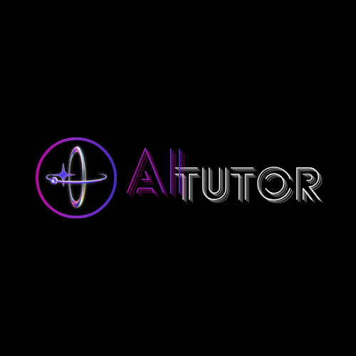
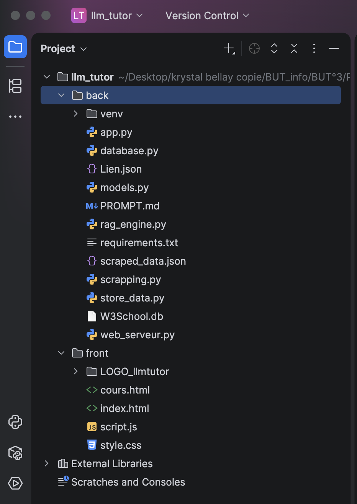
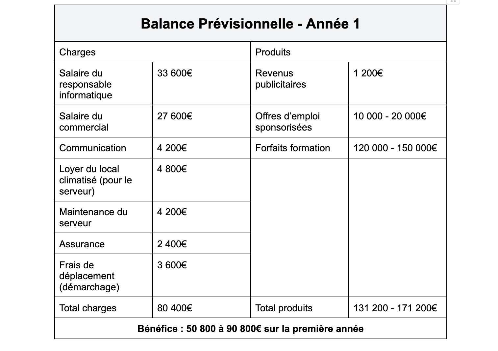
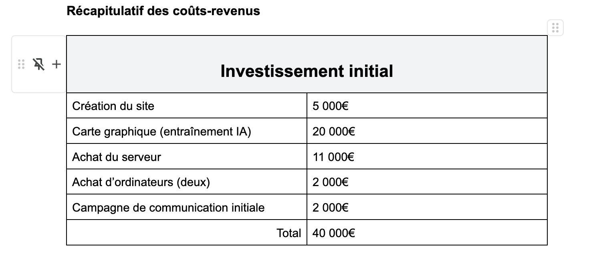

AC31.01
Choisir et implémenter les architectures adaptées
Explication : Arborescence du projet IA tuteur , devoir sur les IA et travailler avec une clé groq
Cette page présente mes compétences et apprentissages critiques de BUT3. Chaque carte contient des preuves visuelles défilantes et peut être ouverte en grand.
Adapter des applications sur un ensemble de supports et montrer la capacité à choisir, faire évoluer et intégrer des solutions techniques.


Explication : Arborescence du projet IA tuteur , devoir sur les IA et travailler avec une clé groq
Explication : refactoring PIL MÉDIA, avant/après, historique Git, correction de code, amélioration CSS, ajout de fonctionnalité.
Explication : fichier docker-compose PIL MÉDIA, configuration serveur, mise en production, environnement de déploiement ou procédure technique.
Analyser et optimiser des applications en étudiant leurs performances, leurs métriques et les bibliothèques utilisées.
Explication : Sur TheCamp, nous avons anticipé l’impact du poids des images sur les performances : temps de chargement, charge réseau et fluidité. Nous avons donc proposé des optimisations comme la compression, le WebP, le lazy-loading et des mesures avec Lighthouse.
Explication : Projet mobile-first déjà développé
Explication : Utilisation de scikit-learn pour un TP
Manager une équipe informatique, organiser une veille, comprendre les enjeux de l’innovation et accompagner un projet ou un changement.
Explication : tableau de veille, sources suivies, fiche de veille, partage en équipe, synthèse ou document de recherche.



Explication : Établir une solution numérique , et faire une prevision des cout et des benefice pour la faisabilité du projet
Explication : Avant de proposer une évolution technique, j’ai analysé le fonctionnement existant afin de préparer un changement progressif et cohérent avec les pratiques de l’entreprise.
Explication : j’ai accompagné la démarche projet en structurant les besoins, en documentant les choix techniques et en échangeant régulièrement avec mon tuteur.